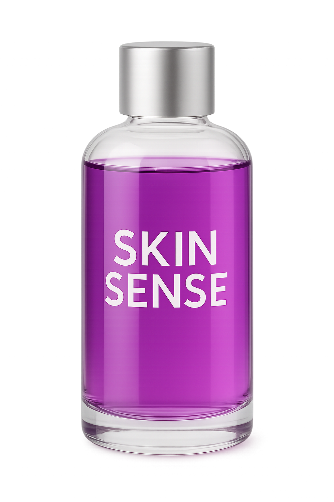

Como Funciona
O SkinSense é um biossensor visual que sinaliza — de forma natural e intuitiva — variações na pele relacionadas à hidratação e ao equilíbrio nutricional.
- ❤️ → Alerta de desidratação ou déficit nutricional.
- 💜 → Equilíbrio saudável.
- 💚/💙 → Indica restauração do equilíbrio.
Protótipo & Apresentação
O Produto (Biossensor)
O SkinSense foi formulado para reagir aos níveis de vitaminas, minerais e hidratação da pele. Proporciona praticidade, permitindo que o usuário realize a análise em casa, sem exames complexos.
- Veículo seguro: disco de algodão ou tirinha para demonstração.
- Uso recomendado: autotestes, suspeita de desequilíbrio nutricional ou acompanhamento médico.
- Seguro & natural: projetado para ser intuitivo, visual e pré-sintomático.

Demonstração Interativa
Desequilíbrio Nutritivo → Rosado / Vermelho
Equilíbrio → Roxo
Restauração Nutritiva → Azul / Verde
Benefícios
Pré-sintomático
Detecta sinais antes de sintomas visíveis — ideal para educação e triagem inicial.
Natural
Base biológica e visual, sem ênfase em componentes sintéticos.
Prático
Aplicável em casa, sem necessidade de deslocamento para laboratórios.
Perguntas Frequentes
Sim, o biossensor é formulado com componentes naturais e seguros para uso doméstico.
Não necessariamente. O SkinSense foi projetado para que o próprio usuário acompanhe o equilíbrio nutricional visualmente.
Recomendamos o uso semanal ou sempre que houver mudanças na alimentação ou hábitos de hidratação.
O líquido do biossensor pode ser manipulado em condições controladas, mas discos de algodão ou tirinhas devem ser descartados após o uso para higiene.
Ele monitora as vitaminas mais comuns relacionadas à saúde da pele (A, C, D) e sinais de desidratação, não todas as vitaminas do corpo.